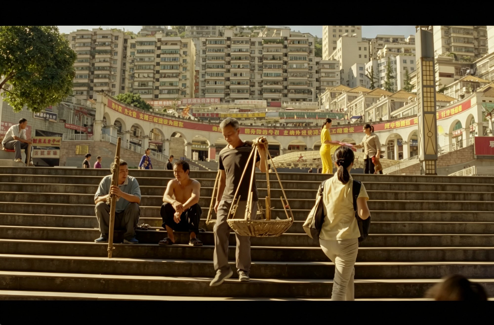
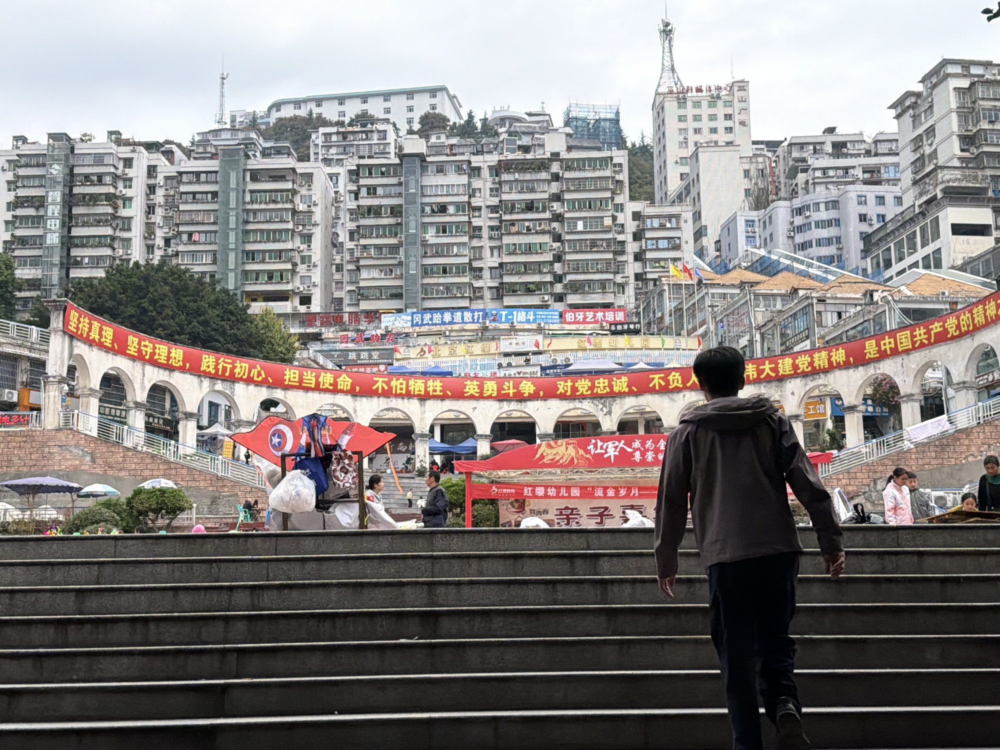
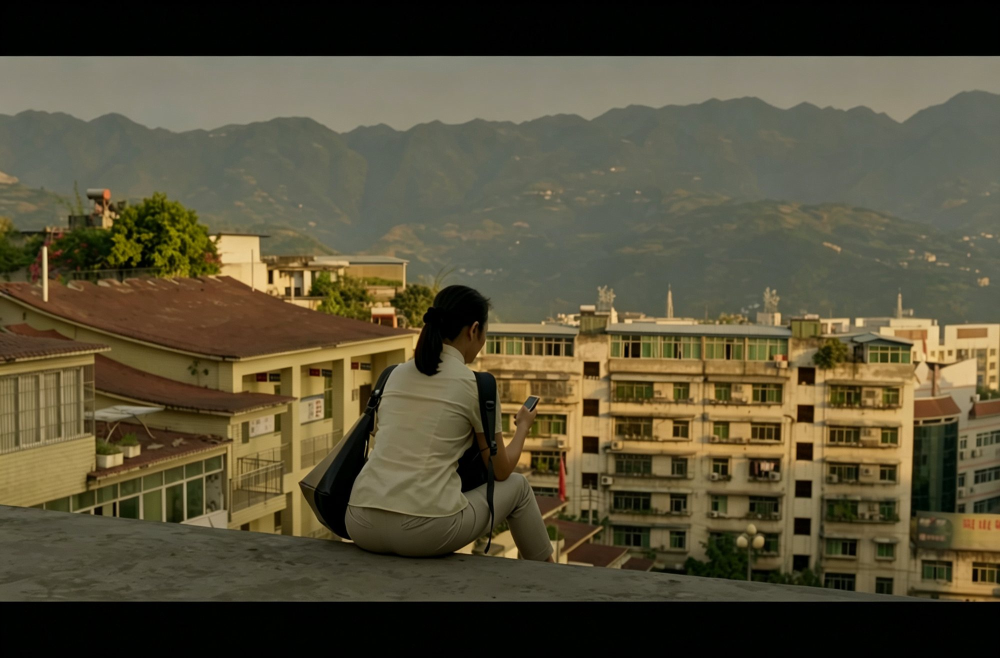
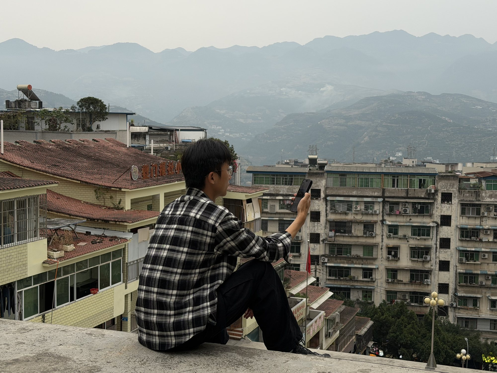

同一个机位，同一排石阶，甚至同一条横幅。
贾樟柯拍出来是电影，我拍出来是游客照。
作为贾樟柯的影迷，我去巫山时专门找过电影里的场景。站到那些熟悉的机位，我本来以为，只要把画面里的东西对齐，就能拍出一点电影感。
结果回家翻照片，景是那个景，味道却完全不是那回事。
景一样，画面为什么不一样
先看这组石阶。
电影里，老人走在灰色石阶上，墙面斑驳，广告牌和横幅带着小城特有的生活痕迹。整个画面不急着证明巫山有多美，它只让一个人从自己的日常里经过。
我站在同一个位置拍下去，台阶还在，墙还在，连横幅都差不多。可树叶太绿，红色广告牌太亮，游客的姿态又像刚刚走进景区。画面有信息，却没有情绪。
{kind=link}

{kind=link}

再看这组人物。
电影里的女人站在江边，侧逆光把她变成一个轮廓。远处的山雾、近处的人和留白，共同把一个普通动作拉长了。
我在大中午拍下同行的人，衣服、栏杆、山水都很清楚。但也正因为一切都太清楚，观众不知道该先看什么，更不知道这个人为什么站在这里。
{kind=link}

{kind=link}

不是设备，是选择
我最先怀疑的是设备。
人家的摄影机有宽容度、有镜头语言，还有调色师；我只有一部手机。器材当然会影响画面，可它解释不了一个更直接的问题：为什么有些人拿手机，也能拍出电影感？
后来我才意识到，自己问错了。
电影感不是把现实拍得更高级，而是决定现实里的什么应该被留下。
现实像一桌还没收拾的食材。滤镜只是最后撒下去的一把调料，真正决定味道的，是你先选了什么，又舍掉了什么。
第一层选择：等到光有情绪
我在巫山拍的照片，大多是中午。光从头顶直直砸下来，人物脸上有硬影，山和水被照得发白。手机为了把每个地方都拍清楚，又会自动提亮暗部、压住高光，最后得到一个正确，但平淡的画面。
电影更愿意等。
清晨和傍晚的光有方向，雾气会把远处的山一层层推开，人物也不再只是一个被照亮的对象，而是被光切出轮廓。
电影里的那种琥珀色，往往不是滤镜拧出来的，是等出来的。
颜色也一样。我的画面里，绿树、红招牌、蓝天都在抢话；电影会压住不重要的颜色，让少数色彩留下来。不是颜色越少越高级，而是它们终于开始说同一件事。
第二层选择：告诉观众先看哪里
手机默认竖屏，人物自然站在正中间。旅游照最在意的是“人到了，景也拍全了”。
电影的宽画幅却在不断制造关系：人和山谁更大，人物往哪边走，视线前方要留下多少空间，栏杆和台阶把目光带向哪里。
画幅只是边框，真正起作用的是取舍。
景深也是同一回事。手机自动模式恨不得把前景、中景、远景全交代清楚；电影有时偏要让背景退后，让你先看见一张脸、一只手，或者一个站在雾里的轮廓。
什么都能看见，常常等于什么都没看见。
第三层选择：画面里的人属于这里吗
我后来越来越觉得，巫山最难复刻的不是雾，也不是旧楼，而是电影里那些人。
老人走台阶的姿势，像已经走了一辈子；女人站在江边，不是在等摄影师按快门，而像真的在等一件没有说出口的事。
他们不是来替风景证明“这里很美”的。他们就在这里生活。
游客则很容易暴露。人一面对镜头，就会下意识整理姿势、寻找最好看的角度，画面也随之从生活变成留念。
所以电影感不只是“找一个人放进画面”。更重要的是，这个人和眼前的环境有没有关系。没有关系，再好的构图也像摆拍；关系成立，一个背影就能让场景活起来。
第四层选择：让一张画面背着时间
电影截图看起来像一张照片，可它其实背着前后几十秒的时间。
我们知道这个人从哪里走来，也隐约期待他会走向哪里。风在吹，船在动，江水和雾都没有停。单独截出一帧，它仍然带着运动留下的重量。
声音还补上了画面之外的世界。
汽笛、脚步、江水、远处模糊的喊声，会告诉你空间有多大，生活离镜头有多近。照片没有耳朵，这部分气氛，再像电影的滤镜也补不上。
颗粒当然有用。它能削弱数码画面的干净，让颜色和边缘不那么锋利。但颗粒只是在模拟时间留下的痕迹，它不能替你创造时间。
下次别急着按快门
如果再去一次巫山，我大概不会先忙着找同款机位。
我会先等一束有方向的光，看看画面里什么值得留下；让多余的颜色和背景退后；等一个真正与环境发生关系的人经过。要是风声、脚步和江上的汽笛同样重要，我会拍一小段视频，而不是逼一张照片承担所有东西。
同一个巫山，贾樟柯拍到的从来不只是风景，而是人在时间里的位置。
我的手机没有输给摄影机。
我只是还没来得及做出那些选择，就先按下了快门。
电影感不是一种滤镜，而是一次次选择。
剩下那一半，是声音，是运动，是时间。
那就去电影院里补。
说明：文中电影画面为网络截图，仅用于个人学习与影像讨论，版权归原出品方所有；其余照片为作者在巫山拍摄。